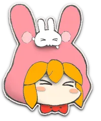
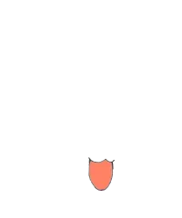
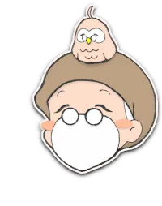
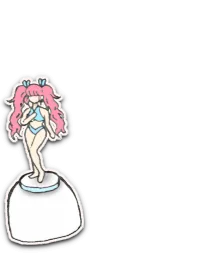
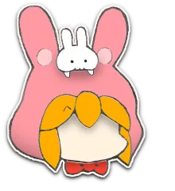
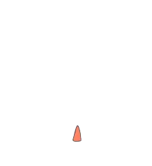
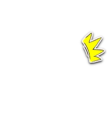

リスナーのあらゆゆ疑問や悩みにこたえゆ「宇宙よろず相談室」！
みんなのアイドル、ユニちゃんでしゅ！
みんなのアイドル、ユニちゃんでしゅ！


デュフフww
本日は行きつけの中古ショップでプレミア価格10倍の絶版フィギュアを保護できて大満足の Dr.YOU (ドクター・ユー) ですぢゃ♥️
本日は行きつけの中古ショップでプレミア価格10倍の絶版フィギュアを保護できて大満足の Dr.YOU (ドクター・ユー) ですぢゃ♥️



ぬわにっ!?
おま、今月の生活費は残りきびちーって口をすっぱくちてゆってたのにまた…耳をなくちたんか！
だいたいフィギュアなどと…精神的に成長ちた人間は「偶像崇拝」などちないのだから、ドクターなら年相応におちついて局の財政に貢献すゆがとーぜんなのでしゅ！
おま、今月の生活費は残りきびちーって口をすっぱくちてゆってたのにまた…耳をなくちたんか！
だいたいフィギュアなどと…精神的に成長ちた人間は「偶像崇拝」などちないのだから、ドクターなら年相応におちついて局の財政に貢献すゆがとーぜんなのでしゅ！
突然ですが、モノローグのテストをば…
しゃっちょ、お給料を上げてくだされ～
しゃっちょ、お給料を上げてくだされ～